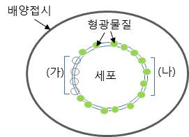

문제 6
단계1
아래의 그림과 같이 세포막 단백질을 형광물질로 표지한 세포가 있다. (가) 부분을 탈색처리 하여 형광이 나오지 않게 만든 후 저온(4°C)에서 10분간 보관하였다가 37°C로 옮겼다. 시간에 따른 (나) 구역의 형광세기의 변화를 예상하여 오른쪽 그래프에 그리고 그 이유를 설명해 보시오.

단계2
위의 세포는 백혈구이고 배양 접시에 세균을 넣어 준 후 현미경으로 관찰하였더니 세포 내부에서 형광물질이 보이는 것을 볼 수 있었다.
(1) 세포의 어떤 작용에 의해 이러한 결과가 관찰된 것인가? 이 작용 과정을 간단히 설명하시오.
(2) 현미경으로 계속 관찰하고 있으면 특정 세포내 소기관으로 모이는 것을 관찰할 수 있다. 그 소기관은 무엇이며 기능을 설명하시오.
단계3
리포솜은 약물이나 화장품에서 미용성분을 세포내로 전달하는 방법으로 활용되고 있다. 리포솜의 단면 구조를 그림으로 그려보고 세포내로 물질 수송이 이루어지는 원리를 설명하시오.